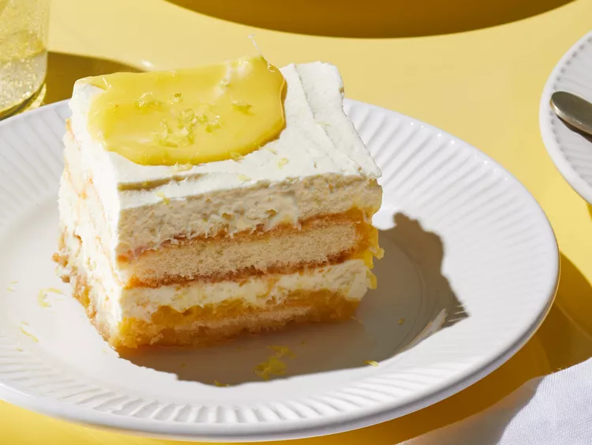

Lemon Tiramisu

Description
Lemon tiramisu is the perfect make-ahead dessert. A bright twist on
classic Italian tiramisu, this refreshing recipe will never disappoint.
Ingredients
- 1 1/2 cups lemon juice
- 2 cups white sugar
- 4 eggs
- 4 egg yolks
- 1/8 teaspoon salt
- 1 cup unsalted butter, cut into cubes
- 1/2 teaspoon vanilla extract
- 1 1/2 cups white sugar
- 3 (1-inch) strips of lemon peel
- 1/2 cup lemon juice
- 2/3 cup limoncello liqueur
- 2 cups heavy cream
- 1/2 cup powdered sugar
- 24 ounces mascarpone cheese
- 1 tablespoon lemon zest
-
10 ounces crisp ladyfingers (about 39 larger or 57 smaller ladyfingers)
Steps
- Gather Ingredients.
-
For Lemon Curd: Combine lemon juice, 2 cups white sugar, eggs, egg
yolks, and salt in a large non-reactive saucepan.
-
Cook, stirring constantly, over medium until mixture thickens and starts
to bubble. Cook over medium-low heat for 2 minutes more. Remove from
heat.
- Strain through a fine mesh sieve into a medium bowl.
-
Stir in butter and vanilla. Cover surface with plastic wrap. Refrigerate
1 to 2 hours or until chilled**. (Lemon curd can be made up to a week
ahead.) Reserve 1/4 cup lemon curd before assembling tiramisu.
-
For Syrup: Combine 1 1/2 cup sugar, lemon peel, lemon juice and
limoncello in a small non-reative* saucepan. Bring to a boil over
medium-high heat, stirring occasionally. Cook until sugar melts.